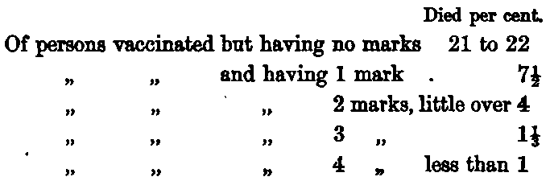

Houses And Towns. Part 8
Description
This section is from the book "Health", by W. H. Coefield.
Houses And Towns. Part 8
It has been quite clearly shown that people can be vaccinated well and badly; that good or bad vaccination depends upon the number and kind of marks produced. Mr. Simon showed this some years ago by computation from statistics of the London Smallpox Hospital for 25 years. He showed that the mortality from smallpox among vaccinated people varied from less than 1 in 100 ; and among the people who died were some who, though stated to have been vaccinated, had no marks at all.
I will just rapidly read the figures :-
A few words about the last epidemic in London in 1870-72.
This epidemic was exceedingly virulent, and extremely fatal. From a paper read by Dr. Grieve before the Epidemiological Society upon "Smallpox," I find that the rate of mortality among all the cases treated at the Hampstead Smallpox Hospital, was between 19 and 20 per cent ; that is a very high percentage. There came to that hospital 6221 people during the epidemic, and it was found that of unvaccinated people over 51 per cent died, and of vaccinated people only 11-4 per cent. It was also shown that the mortality among vaccinated people depended upon the number of scars they had. Vaccination is not considered to be efficiently performed unless at least two marks are produced ; and if four good marks are produced the person may be considered, practically speaking, to be protected from smallpox until the age of 12 or 15.
Now among these 6221 cases that came into the Smallpox Hospital only three cases presented proofs of re-vaccination, and these were mild cases. Experience thus shows quite clearly that cases of smallpox after re-vaccination are rare, and much less severe.
During that same epidemic, taking all the hospitals together, there were about 14,00.0 cases treated in London, and out of these 14,000 there were only four that showed proof of re-vaccination, and these were all mild cases.
I will just take the instance of people under 15. Out of 3085 consecutive cases in the Homerton and Stock-well Hospitals the mortality among those under 15 who were unvaccinated was 41 per cent, the mortality among those who had bad vaccination marks was 12 per cent, and the mortality among those who had only one vaccination mark was only 1 1/2 per cent ; and, to crown all, 277 cases under 15 years of age had two or more good marks, and there was not a death amongst them.
In Birmingham during that epidemic the mortality was 12.3 among those described as vaccinated, and 48.9 among those unvaccinated, and 16.45 per cent of the total cases reported ; and the mortality was less than in the London hospitals. The severity of the disease was much less in those well, than in those imperfectly vaccinated ; and not a single death of a re-vaccinated person occurred.
A word or two about the epidemic that we have at present. In 1876, 735 people died from smallpox in London. Of these some are reported as vaccinated, some as unvaccinated, and of some the certificates give no information. So that there may be no misunderstanding I will not take that whole number, because it includes doubtful cases. I will take the 338 who died in hospitals, as we know of those whether they were vaccinated or not. Out of this number 204 had not been vaccinated, and 134 had been; that is to * say, 60 per cent had not been vaccinated, while 40 per cent had been; in other words there were 20 per cent more deaths among the unvaccinated than among the vaccinated people in the smallpox hospitals of London, although the vaccinated people in London are about nine times as numerous as the unvaccinated. Now we will take the completed cases in the hospitals, that is, cases either cured or in which death ensued. There were 1377 cases, 1018 vaccinated and 359 unvaccinated. Of the 1018, 134 died, and of the 359, 204 died; from which we see that a little over 13 per cent of vaccinated people died, and nearly 57 per cent of unvaccinated; that is the experience of 1876.
Let us just glance at the statistics from Sweden which are often pointed to as conclusively proving the value of vaccination, though there has been an attempt to explain them away.
From 1749 to 1809 inclusive, 61 years, during which vaccination was not practised, there was only one year in which the deaths in Sweden were under 1000; every other year they were over 1000, and in nine years of that period over 10,000 in each year. From 1810 to 1872, 63 years, when vaccination was practised, there were 48 years in which the deaths were under 1000 and not a single year in which they came to 10,000, or even to 3000. . I think these are facts about which there is no possibility of adverse explanation. Again, the greatest number of deaths in any year in the first period of 61 years was 16,607, and the greatest number of deaths in the second period 2488 ; the least number of deaths in any year in the first period was 671 and in the second 2 ; these are the main facts of the Swedish statistics.
As it is sometimes stated that other diseases can be conveyed by vaccination, I should like to quote to you from a pamphlet entitled " A Vaccination Controversy," being letters between the chairman of the Anti-vaccination Society and Dr. George Ferguson of Cheltenham.
Dr. Ferguson says-"Vaccination does not communicate other diseases. Mr. Marson has vaccinated 50,000 times and has never known of such communication. Sir William Jenner, Sir James Paget, and Dr. West of the Children's Hospital, Ormond Street, London, all testify to the same fact, and Dr. West during 17 years had 26,000 children under his care from whom to draw conclusions." On the other hand, it is quite certain that there have been one or two exceedingly rare cases where persons have not been properly vaccinated and bad results have followed ; this has been shown by a man who is a very strong advocate of vaccination himself, Mr. Jonathan Hutchinson.
Continue to: